Albums by Category
Albums featured on this site are organized into categories based on the primary instrument or artist (primary or first listed) for each album. Each album appears once and in one category only.
1. Trumpet
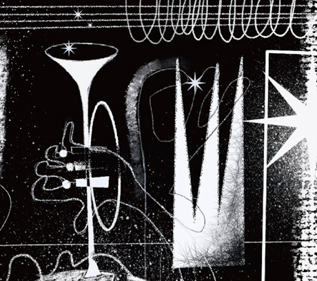
|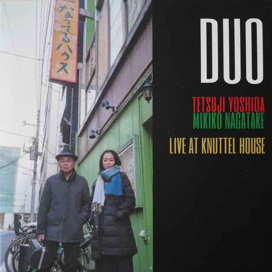
|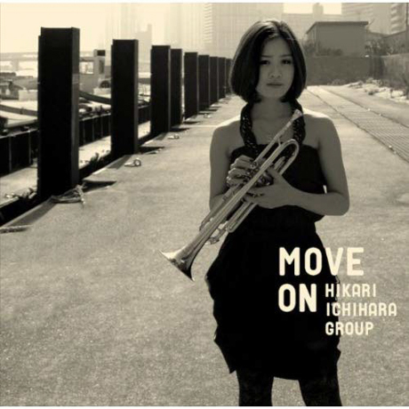
- Duo by Shinpei Ruike & George Nakajima
- Humadope by Keisuke Nakamura
- Humadope 2 by Keisuke Nakamura
- Live at Knuttel House by Tetsuji Yoshida & Mikiko Nagatake Duo
- Move On by Hikari Ichihara Group
- N.40° by Shinpei Ruike & George Nakajima
- Sara Smile by Hikari Ichihara
- Scratch by Miki Hirose
- Song of Flower by Yuko Miyawaki
- Unity by Hikari Ichihara Group *
- See all: #trumpet
2. Saxophone
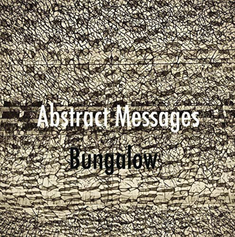
|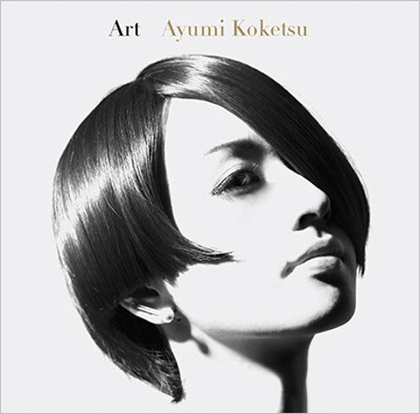
|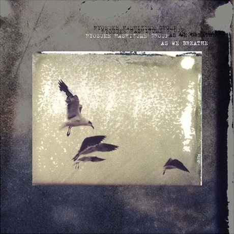
- 64 Charlesgate by Akihiro Yoshimoto Quartet
- Abstract Messages by Bungalow
- Acoustic Fluid by Ryosuke Hashizume Group
- Art by Ayumi Koketsu
- As We Breathe by Ryosuke Hashizume Group *
- Beyond the Sea by Miyuki Moriya
- Big Catch by Wataru Hamasaki Meets Akane Matsumoto Trio
- Cat’s Cradle by Miyuki Moriya
- Encounter by Hideaki Hori & Wataru Hamasaki
- First Contact by Mase Hiroko Quintet
- Incomplete Voices by Ryosuke Hashizume Group
- Jabuticaba by Jabuticaba
- Let Your Mind Alone by Mabumi Yamaguchi
- Lite Blue by Takuji Yamada
- Live Fuse by Fuse
- Longing by Yosuke Sato & George Nakajima
- Major to Minor by Kohsuke Mine Quintet
- Mawsim by Nami Kano
- Memories of T by TCQ
- Metropolitan Oasis by Bungalow
- Mistral by Toshihiko Inoue & Masaki Hayashi
- Moving Color by Akihiro Yoshimoto Quartet
- Needful Things by Ryosuke Hashizume
- Oxymoron by Akihiro Yoshimoto & Takashi Sugawa (free/experimental)
- Past Life by Bungalow
- Rainbow Tales by Ayumi Koketsu
- Side Two by Ryosuke Hashizume Group
- Skipping Down the Street by Seiji Harakawa Quartet
- Trust by Akane Matsumoto & Ayumi Koketsu
- Un Jour by Clepsydra
- Unseen Scenes by Bungalow
- Uta Oto by Miyuki Moriya
- Vayu by Toshihiko Inoue (solo)
- Viento by Mabumi Yamaguchi
- VisibleInvisible by Ryosuke Hashizume Group
- We Don’t Know Yet by Hiromi Miura
- Wordless by Ryosuke Hashizume Group
- Workout!! by Seiji Tada
- You Already Know by Bungalow
- Zephyr by Zephyr
- See all: #saxophone
3. Trombone
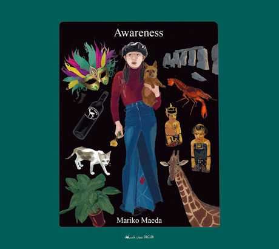
|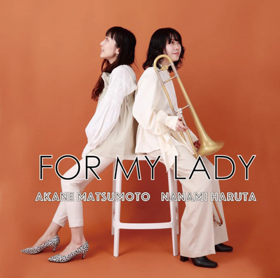
|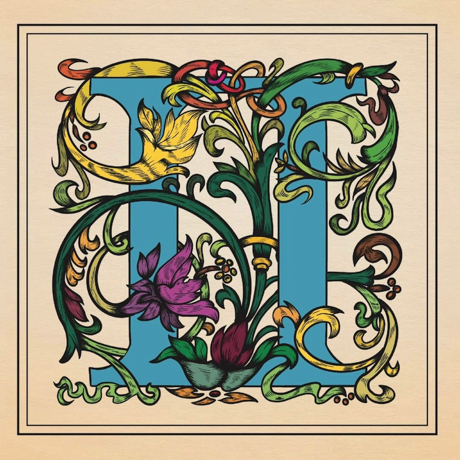
- Awareness by Mariko Maeda
- For My Lady by Akane Matsumoto & Nanami Haruta
- II by Nanami Haruta *
- See all: #trombone
4. Flute
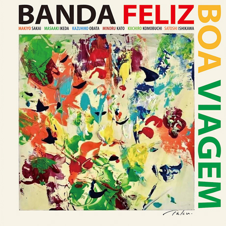
|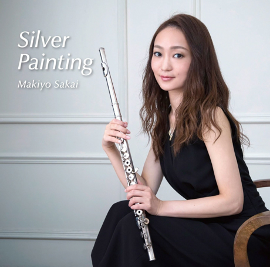
|- Boa Viagem by Banda Feliz (Brazilian/Latin jazz)
- Gakudan Hitori by Reikan Kobayashi
- Silver Painting by Makiyo Sakai *
- Where Have U Been? by Erisa Ogawa
- See all: #flute
6. Violin
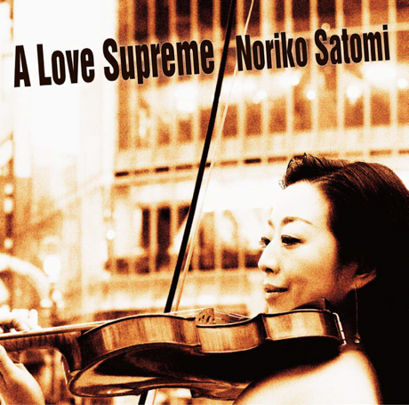
|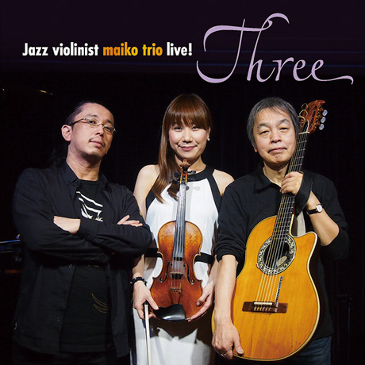
|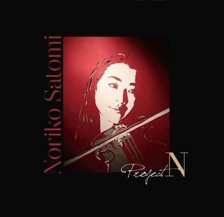
- A Love Supreme by Noriko Satomi
- Live! Three by Maiko Trio
- Project-N by Noriko Satomi *
- Solo by Maiko (solo)
- See all: #violin
7. Cello
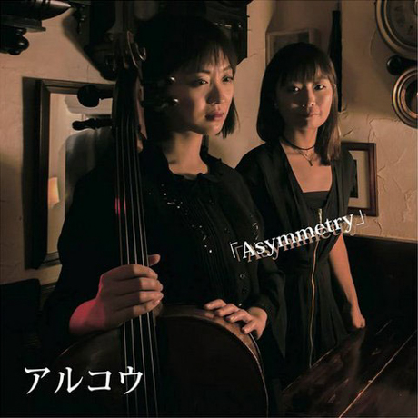
|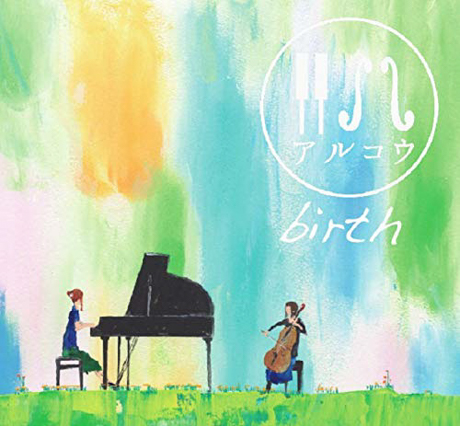
|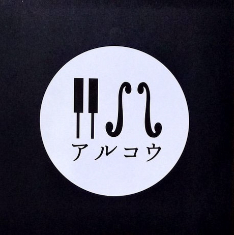
- Asymmetry by Arco
- Birth by Arco
- Live At Yoncha by Arco *
- See all: #cello
8. Vibraphone
|
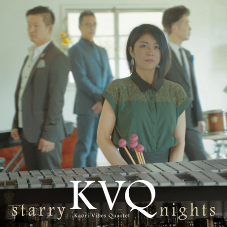
|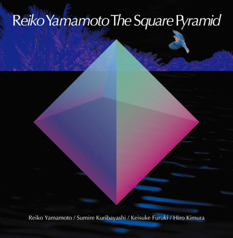
- Cross Point by Kaori Vibes Quartet
- El viento y las flores by Magnolia *
- Flying Mind by Kaori Vibes Quartet
- Here Goes! by Fumiko Yamazaki
- Starry Nights by Kaori Vibes Quartet
- The Square Pyramid by Reiko Yamamoto
- See all: #vibraphone
9. Guitar
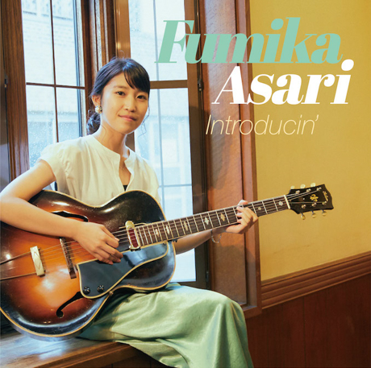
|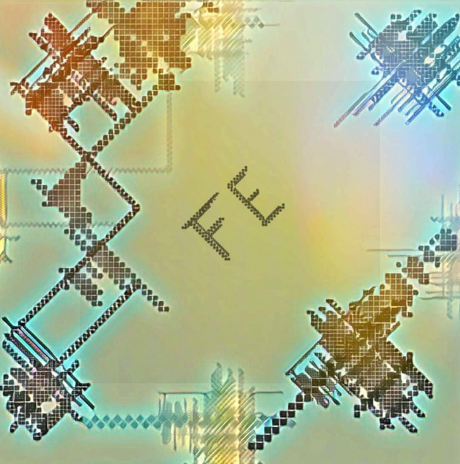
|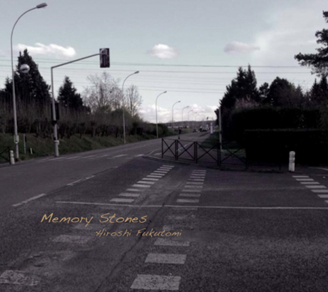
- Bonanza by Yudo Matsuo
- Childhood’s Dream by Shigeo Fukuda & Toshiki Nunokawa
- Frozen Dust by Takumi Seino & Motohiko Ichino (free/experimental)
- Introducin’ by Fumika Asari
- Live at Virtuoso by Fe
- Melodies by Melodies (free/experimental)
- Memory Stones by Hiroshi Fukutomi
- National Anthem of Unknown Country by Rabbitoo
- Resonance by Duo Tremolo
- Sketches by Motohiko Ichino
- The Goat on a Peak by Ghost Peak (free/experimental)
- The Torch by Rabbitoo
- Two for the Road by Yuji Ito & Koichi Hirata Duo *
- See all: #guitar
10. Piano
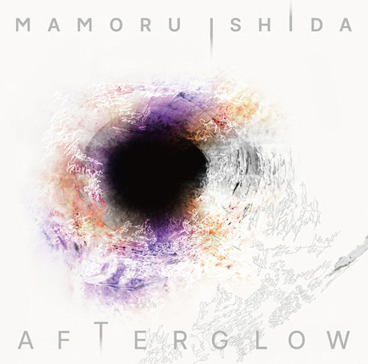
|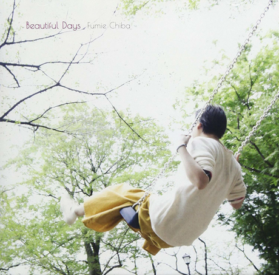
|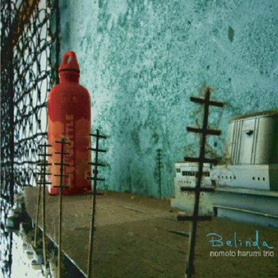
- 1st Stage by Yukako Yamano
- 3rd Stage by Yukako Yamano (solo)
- Abyss by Chihiro Yamanaka
- Afterglow by Mamoru Ishida
- Amizm by Ami Fukui
- Another Ordinary Day by Harumi Nomoto Trio
- Appreciation by Naoko Tanaka
- Aquapit by Aquapit (Hammond B3 organ)
- Banquet by Sayaka Kishi Trio
- Beautiful Days by Fumie Chiba
- Belinda by Harumi Nomoto Trio
- Beloved Ones by Yuka Yanagihara Trio
- Boundary by Megumi Yonezawa / Masa Kamaguchi / Ken Kobayashi (free/experimental)
- Bubble Fish by Shunichi Yanagi Trio
- Calling by Hitomi Nishiyama Trio
- Canvas by FNK
- Catastrophe in Jazz by Taihei Asakawa
- Circle for Peace by Seiji Endo (solo)
- Colors by Sayaketts
- Crossing Reality by Eri Chichibu
- Dot by Hitomi Nishiyama
- Dubai Suite by Yukako Yamano & Yukari Inoue (piano duo)
- Duo by Taeko Kurita & Akira Sotoyama
- Echo by Hitomi Nishiyama
- Embryo by Koichi Sato (solo)
- Fairway by eFreydut
- Faith by Mayuko Katakura
- Featuring Te by Sayaka Kishi (solo)
- First Touch by George Nakajima Trio
- Flower Clouds by Naoko Sakata Trio
- Free by Michiyo Matsushita Trio
- Gallery by Yukiko Hayakawa Trio
- Genji Monogatari Volume 1 by Seiji Endo (solo)
- Gift by Manabu Ohishi Trio
- Haru No Kaze by Sachiko Ikuta Trio
- Horizon by Hideaki Hori
- I Need a Change, Too by Yasumasa Kumagai
- Images by Yuya Wakai (solo)
- Imperial by Yukako Yamano (solo)
- In My Words by Hideaki Hori Trio
- Inner Views by Yuka Yanagihara Trio
- Inspiration by Mayuko Katakura
- Invisible by Junichiro Ohkuchi Trio
- Ishida Mamoru 4 feat. Mike Rivett by Mamoru Ishida
- Isolated by Otohito Fuse Trio
- It’s Just Beginning by Fumio Karashima Trio
- I’m Missing You by Hitomi Nishiyama Trio
- J-Straight Ahead by Yasumasa Kumagai
- Ko-tsu-ko-tsu by Taeko Kurita (solo)
- Lach Doch Mal by Chihiro Yamanaka
- Last Resort by Yasumasa Kumagai & J-Jazz Homies
- Life Is Too Great by Sayaka Kishi Trio
- Little Girl Blue by Akane Matsumoto (solo)
- Live by Hitomi Nishiyama Trio “Parallax”
- Living Without Friday by Chihiro Yamanaka Trio
- Long Way to Go by Kanoko Kitajima
- Madrigal by Chihiro Yamanaka Trio
- Many Seasons by Hitomi Nishiyama Trio
- MCY by Ami Fukui Trio
- Melancholy of a Journey by Koichi Sato
- Melodies for Night & Day by Hideaki Hori (solo)
- Memories by Naoko Tanaka Trio
- Memories of You by Akane Matsumoto
- Music in You by Hitomi Nishiyama Trio
- New Departure by Takayuki Yagi
- New Heritage of Real Heavy Metal by NHORHM
- New Heritage of Real Heavy Metal -Extra Edition- by NHORHM
- New Journey by Ami Fukui Trio
- Night & Day by Akane Matsumoto
- Nova Manhã by Ami Fukui Trio
- Oh, Lady Be Good by Akane Matsumoto
- Open the Green Door by Hakuei Kim Trio
- Outside by the Swing by Chihiro Yamanaka
- Piano Pieces Collection by Seiji Endo (solo)
- Piano Pieces Collection II by Seiji Endo (solo)
- Piano Works by Ken’ichiro Shinzawa (solo)
- Playing New York by Akane Matsumoto
- Pray by Yasumasa Kumagai
- Prelude to a Kiss by Miki Hayama
- Progress by Setagaya Trio
- Protean by Protean
- Rougequeue by Fumie Chiba
- Sakura by Yukari Inoue (solo)
- Sakura Meditation by Seiji Endo (solo)
- Sally Gardens by Michiyo Matsushita (solo)
- Slope by Shunichi Yanagi Trio
- Small Pieces for Flying Padre by Trio Export 63.1.0.X
- Solo by Mikiko Nagatake (solo)
- Sora by Eriko Shimizu
- Sympathy by Hitomi Nishiyama Trio
- Talk, Vol. 1 by Polyglot
- The Duality of My Soul by Mayuko Katakura
- The Echoes of Three by Mayuko Katakura
- The Flow of Time by Takako Yamada
- The Light Flows In by Yuichiro Aratake (solo)
- Tides of Blue by Sumire Kuribayashi / Kazuma Fujimoto / Takashi Sugawa *
- Tip of Dream by Fumie Chiba Trio
- Touch of Winter by Taihei Asakawa Trio
- Toys by Sumire Kuribayashi Trio
- Trispace by Trispace
- Unconditional Love by Hideaki Hori Trio
- Urban Clutter by Ami Fukui Trio
- Urban Nocturne by Yuichi Narita (solo)
- Utopia by Koichi Sato
- Vibrant by Hitomi Nishiyama (solo)
- Virgo by Harumi Nomoto Trio
- Waltz for Debby by Taihei Asakawa (solo)
- When October Goes by Chihiro Yamanaka Trio
- Wide Angle by Miki Hayama Trio
- Wish by Manabu Ohishi Trio
- See all: #piano
11. Bass
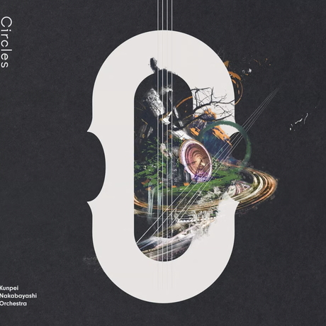
|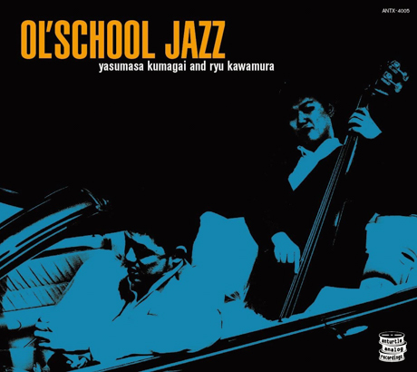
|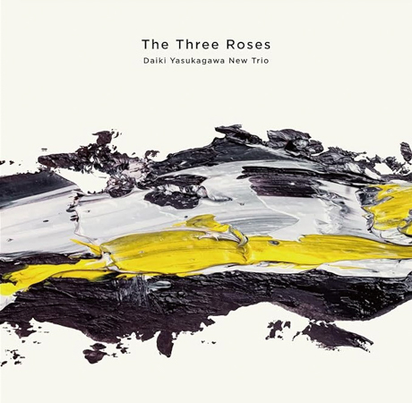
- Bass on Cinema by Shinichi Kato
- Bass on Times by Satoshi Kosugi
- By Coincidence by Yoshihito “P” Koizumi P-Project
- Circles by Kunpei Nakabayashi Orchestra *
- Duet by Shinichi Kato & Masahiko Sato
- Kanmai by Daiki Yasukagawa Trio
- My Soul Meeting by Motoi Kanamori
- Nijuso by Hideaki Kanazawa & Sumire Kuribayashi
- Ol’ School Jazz by Yasumasa Kumagai & Ryu Kawamura
- Path of Hope by Minoru Yoshiki Soulstation
- Retattanni no Mori by Yuki Ito (solo)
- The Live by Motoi Kanamori
- The Three Roses by Daiki Yasukagawa New Trio
- Trios II by Daiki Yasukagawa Trio
- See all: #bass
12. Drums
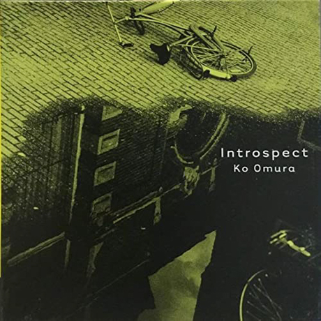
|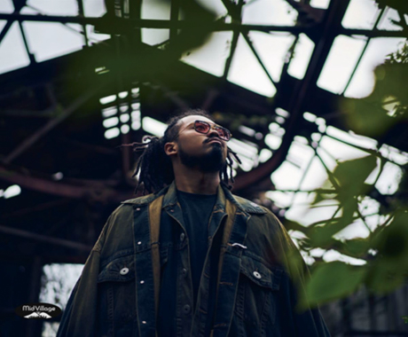
|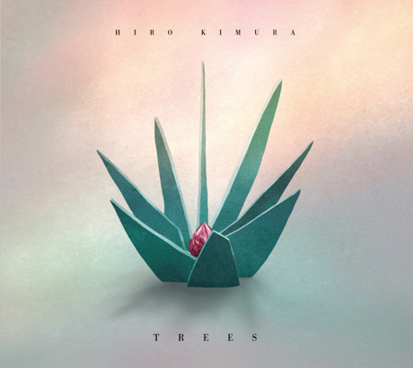
- Folds by Hiro Kimura Quintet
- For 2 Akis by Shinya Fukumori Trio (free/experimental) *
- Halo by Blue Dot
- Introspect by Ko Omura
- Invisible Diary by Kaito Nakamura
- Niwatazumi by Kazumi Ikenaga
- NordNote by Kazumi Ikenaga & Taihei Asakawa
- Rin by Sohnosuke Imaizumi
- Routine Jazz Sextet by Routine Jazz Sextet
- Sumitty & The Funfair by Sumito Oi
- Trees by Hiro Kimura
- You’ve Changed by Hara Dairiki Trio
- See all: #drums
13. Vocals
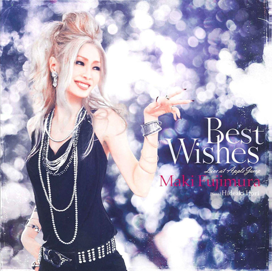
|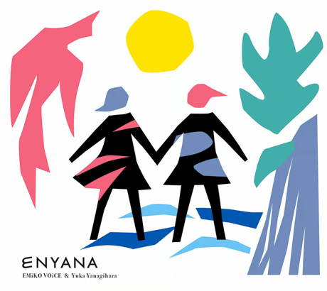
|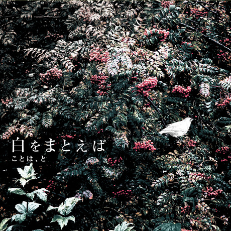
- A Tempo by Meu Coracao (Brazilian/Latin jazz)
- Agora by Yuka Ueda (Brazilian/Latin jazz)
- Almost Like Being in Love by Azumi
- Back in Time to Boston by Yoshiko Saita
- Bb by Baby Brothers
- Best Wishes by Maki Fujimura
- Blossoms by Ruriko Kawamura
- Bénin Rio Tokyo by Nobie (Brazilian/Latin jazz)
- Carta by Emiko Voice
- Colors in Silence by Tomoka Miwa
- Dois by Yuka Ueda (Brazilian/Latin jazz)
- Enyana by Emiko Voice & Yuka Yanagihara (Brazilian/Latin jazz)
- Etrenne by Mie Joké
- Faces by Kaoru Azuma / Hitomi Nishiyama
- Feel Like Makin’ Love by Sanae Ishikawa
- Fever by Trigraph
- Flowers On The Hill by Akiko Suda
- Grown-up Christmas Gift by Sanae Ishikawa
- Hall Tone by Meu Coracao (Brazilian/Latin jazz)
- Happy Christmas with Bb by Baby Brothers
- Les Komatis by Les Komatis
- Luar by Sul Madrugada (Brazilian/Latin jazz)
- M by Masako Kunisada
- Music Make Us One by Yuichiro Aratake
- No One Else by Naoko Akimoto
- Okurimono by Hiroco Nagano
- Owari to Hajimari by Nobie & Takayoshi Baba (Brazilian/Latin jazz)
- Phase 2 by Emiko Voice x Suga Dairo
- Primary by Nobie
- Shining Hour by Yako Horikita
- Shiro o Matoeba by Koto ha, To *
- Standard Trio by Emiko Voice (Brazilian/Latin jazz)
- Stolen Moments by Layla Tomomi Sakai
- The Gift by Rie Taguchi
- The Gift II by Rie Taguchi
- The Island by Layla Tomomi Sakai
- This is Atomi by Atomi Hamada
- Tranquillo by Miwo
- Tsutaete Ikou by Seiji Endo
- Virtual Silence by Chie Nishimura
- Water Me! by Water Me!
- Whisper Not by Layla Tomomi Sakai
- Wonderful Life by Masako Kunisada
- See all: #vocals
*: latest article in category